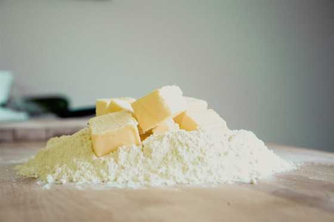
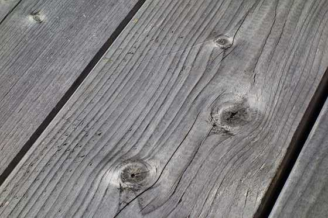

石川県加賀市・加賀温泉駅そば
真心こめて、丁寧に。
からだと心にやさしい、米粉のシフォン。
看護師と保育士の姉妹が営む、米粉シフォンケーキ専門店です。
お店の由来と想い
加賀生まれ・加賀育ちの姉妹が、
安心して食べられるお菓子を。
紹介記事によると、心寧(ここね)は、加賀市出身の姉妹が営む米粉シフォンケーキの専門店です。もともと看護師と保育士として働いていた2人が、出産などを経て食について改めて考え、「たくさんの人に笑顔になってもらえたら」という想いで開いたお店です。店名には「真心込めて丁寧に」という気持ちが込められているそうです。

- 国産の米粉を使ったグルテンフリーのシフォンケーキ。食品添加物は使わない。
- 卵は加賀市の卵農家から仕入れていると紹介されています。
- 製造から包装まで、ひとつひとつ手作業。
- テイクアウトとイートインに対応。
出典: 週末、金沢(weekend-kanazawa.com)、石川スタイル(ishikawa-style.com)の紹介記事。最新情報は店舗のInstagramでご確認ください。



メニュー
ふわふわの米粉シフォンと、ほっとするお飲み物。
シフォンケーキのほか、米粉の焼菓子、コーヒー、クラフトコーラなどの自家製ドリンクが紹介されています。味の種類は日によって変わるようです。




営業時間・定休日・価格: 準備中 / 電話: 準備中
口コミ(イメージ例)
こんなお声が届きそうです。
イメージ例
ふわっと軽くて、やさしい甘さ。小さな子どもと一緒に食べられて安心でした。
イメージ例
小麦を控えている家族へのお土産に。持ち帰りもできて助かります。
イメージ例
コーヒーと一緒にゆっくり。駅の近くで気軽に寄れるのがうれしいです。

写真クレジット
- whisk.jpg「Whisk (IMG 0265)」Matti Blume / CC BY-SA 4.0
- flourbowl.jpg「Graham flour」Magnussoder / CC BY-SA 4.0
- wheatflour.jpg「Wheat flour 01」congerdesign / CC0 1.0
- flourbutter.jpg「Cookie ingredients like flour and butter」markusspiske / CC0 1.0
- cloudslight.jpg「Clouds in the sky in August 2014」Jakec / CC BY-SA 4.0
- pastel.jpg「Pastel clouds at sunset in Tuntorp」W.carter / CC BY-SA 4.0
- bubbles.jpg「Bubbles on seawater」Tim Marshall / CC0 1.0
- plate.jpg「Empty table setting plate fork knife」Stock Catalog / CC BY 2.0
- wood.jpg「Weatherworn planks on top of wooden table」W.carter / CC0 1.0
- fabric.jpg「An example of waffle fabric」Alexandra.birenbaum / CC BY-SA 4.0
- laos.jpg「Li Phi falls at sunrise (clouds)」Basile Morin / CC BY-SA 4.0
- rice.jpg「A bowl of rice」Douglas Perkins / CC0 1.0